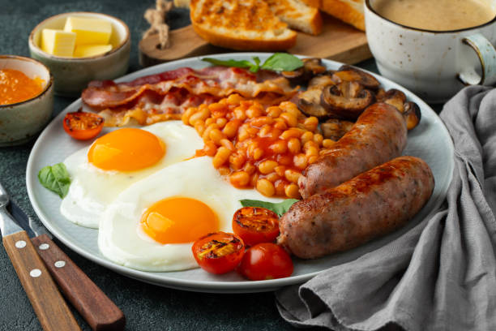

Englsih breakfast recipe
 Learn how to make the famous English breakfast, a staple in england. this huge meal is must have for those who have an appetite.
eggs
sasauges
mushrooms
fresh tomatoes
beans in tomatos sauce
toasted bread of your choice
Steps
Fry the egss, mushrooms and tomatoes on a low heat (make sure to add a little oil or butter)
heat up the beans
let the contents fry until done
serve up on one plate and enjoy piping hot
Homepage